雨の牧場と、晴れ間の白浜散歩。和歌山1泊2日の犬連れ旅
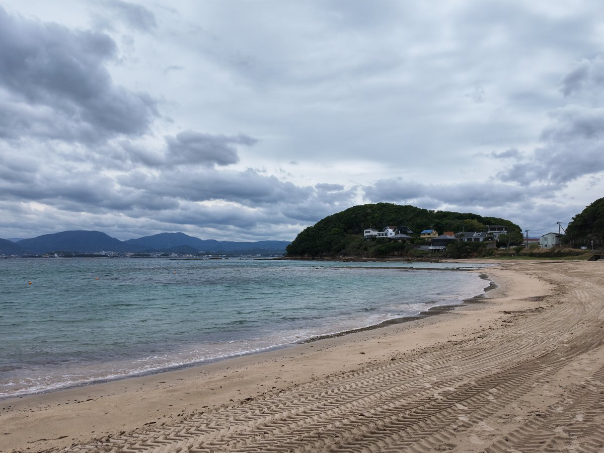
旅のはじまり
少し前の滋賀旅行が良かったので、今度は和歌山へ。1泊2日でゆっくり巡れるルートとして、海南市の黒沢牧場でのんびり過ごしてから、宿泊地の白浜へ南下する流れにした。
朝の天気予報は1日目が雨、2日目はなんとか持ち直す予報。せっかくの旅行で雨は残念だけど、こつぶと一緒に楽しめる場所はあるはずと信じて出発した。
1日目: 黒沢牧場でお弁当 → とれとれ市場で海鮮丼 → 四季の郷遊楽でチェックイン → 潮騒スパで温泉
2日目: チェックアウト → 江津良海岸でお散歩 → フィッシャーマンズワーフ白浜でランチ → 平草原公園のドッグランで遊ぶ
1日目（雨）
黒沢牧場（海南市）
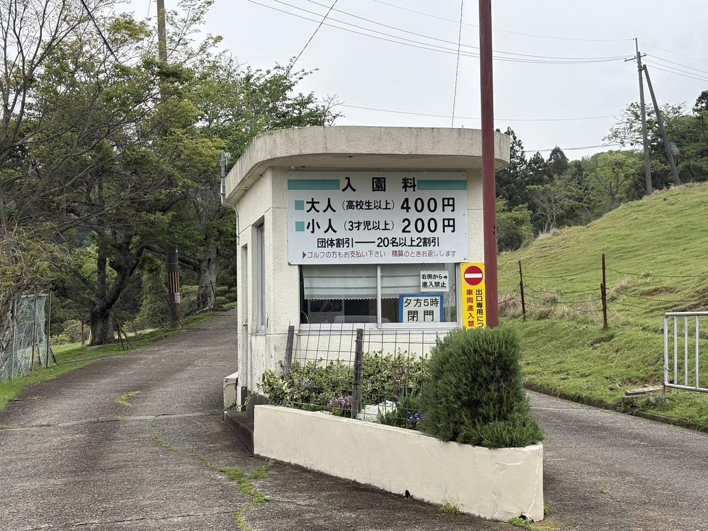
朝に大阪を出発して、お昼前に黒沢牧場に到着。受付ゲートで入園料（大人400円・小人200円）を車に乗ったまま支払うシステム。ゴルフ場と一体になっていて、ゴルフ利用の人もここで受付している。夕方5時で閉門なので、夕方遅くの来園は気をつけたい。
奥に進むと、建屋の横に広い芝生の広場が出迎えてくれる。緑の絨毯のような景色で、犬と走り回ったらさぞ気持ちいい場所——のはずだったけれど、到着したタイミングで本格的な雨が降り始めてしまった。
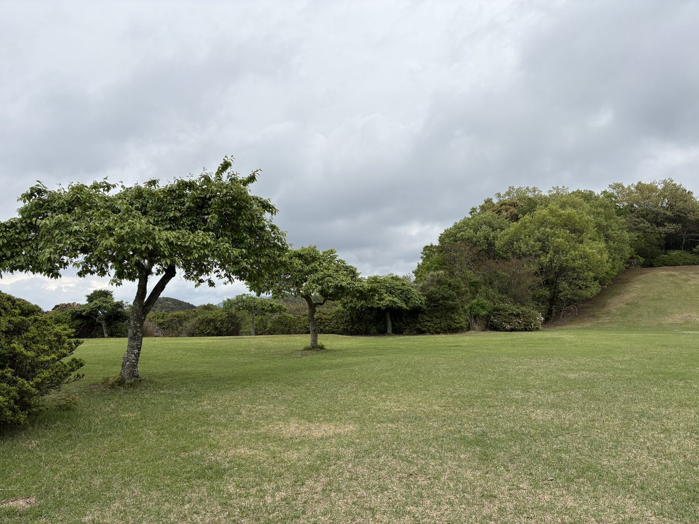
お弁当を持参していたので、椅子とシートを広げて芝生でランチ……の予定が、ぽつぽつ降ってきた雨が次第に強くなり、急いで車に避難。結局、車内でお弁当を広げる羽目になった。雨音をBGMにする車内ピクニックは、それはそれで思い出深い時間ではあった。
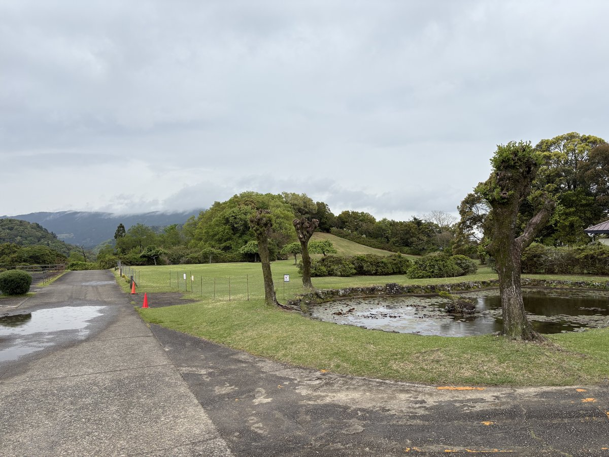
牛のオブジェの奥にはドッグランがある。小型犬エリアとサイズ制限のないフリーエリアの2区画で、入園料だけで追加料金なしに使える。ただしこの日は雨で地面がぬかるんでいたので、見るだけにして利用は見送った。
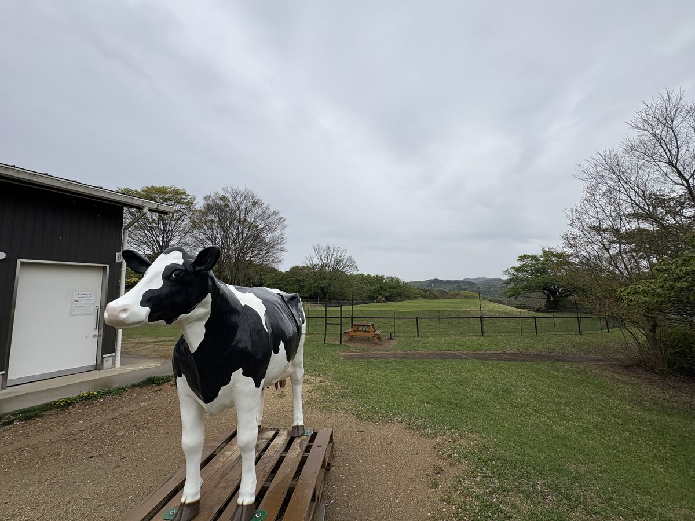
帰り道では、敷地に入ってくる道沿いの放牧地で本物の牛さんたちを間近で見ることができた。雨だったので車の中からになったけれど、柵越しにこちらをじっと見つめる白黒の牛が窓のすぐ近くまで来てくれた。こつぶは初めて見る大きな生き物にすっかりビビって固まっていた。
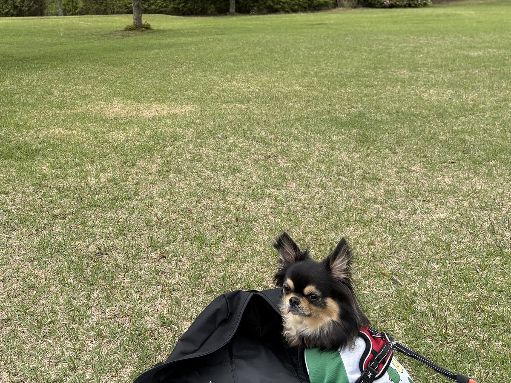
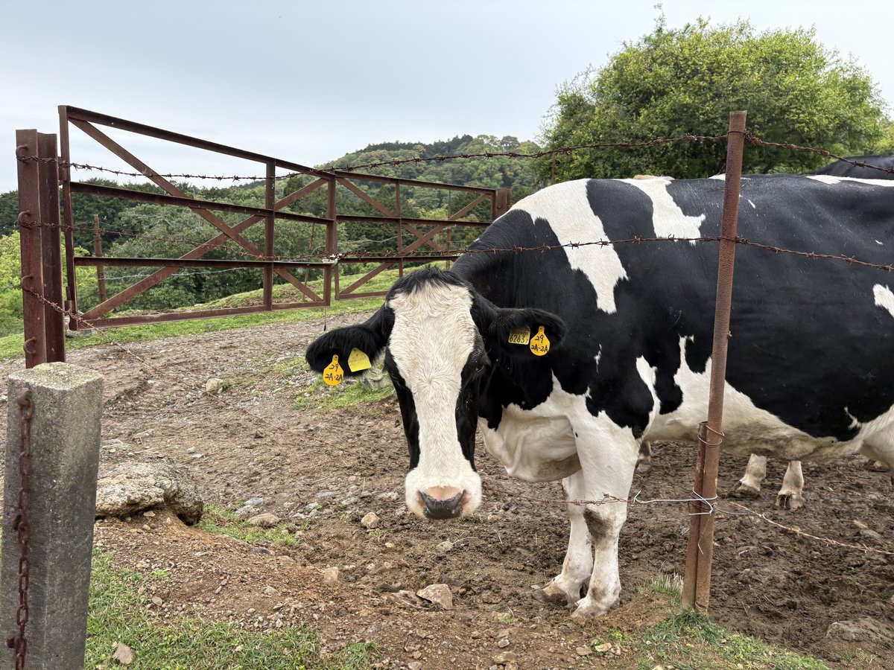
黒沢牧場のポイント
- 入園料: 大人400円 / 小人200円（団体割引20名以上で2割引）
- 夕方5時で閉門
- 受付ゲートで入場時に支払い
- 広大な芝生広場で犬連れ散歩OK（雨の日は厳しい）
- ドッグラン併設（小型犬エリアとフリーエリアの2区画）
- 道沿いの放牧地で実際の牛を見られる
- ゴルフ場併設
とれとれ市場 南紀白浜
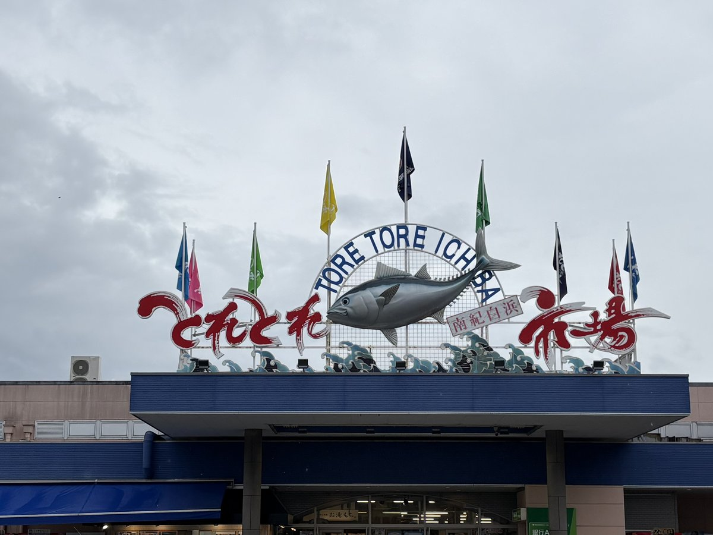
牧場を後にして、阪和道で南下。雨の中の長距離移動はなかなか疲れる。夕方頃にとれとれ市場に到着した。
ここは西日本最大級の海鮮マーケットで、屋内市場とBBQコーナーは犬NG。屋外テラス席は犬連れで利用したという声を見かけるものの、公式サイトには可否の記載が見当たらなかったので、犬連れで行くなら事前に確認しておきたい。この日は雨で外気も涼しく、こつぶは車で待っていてもらうことに（窓を少し開けて、すぐ戻る前提で交代で見て回った）。
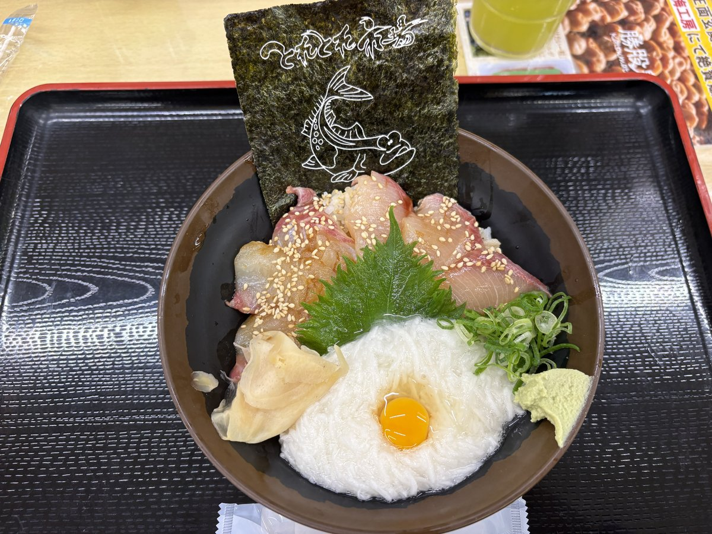
買ったのはカタタ丼。鯛とカンパチの漬けに、とろろとうずらの生卵がのった丼で、ここに来ると必ずこれを食べている。醤油がしっかり染みた白身に、とろろのまろやかさが重なる。うずらの黄身を崩して混ぜると、さらに濃厚になって箸が止まらない。海苔のロゴがかっこよくて、写真映えもばっちりだった。
店内は土産物屋・鮮魚売り場・食事スペースが広くて、見て回るだけでも楽しい。マグロの解体ショーや踊りたこ焼きなど、エンタメ要素も豊富で、犬連れでなければ半日楽しめそうな施設だった。
とれとれ市場のポイント
- 駐車場777台・無料
- 営業時間8:30〜18:30
- 屋内市場・BBQコーナーは犬NG（屋外テラスは公式に記載がないため事前確認を）
- 海鮮丼や寿司、漁師飯が豊富
- マグロ解体ショー（時間指定）
四季の郷 遊楽（白浜町）

夕方頃、宿泊先の四季の郷遊楽に到着。高台の上にある「グランピングリゾート」だけど、今回はグランピングではなく愛犬同伴専用の素泊まりプランで予約。価格はリーズナブルで、コスパが本当に良い。
まずは管理棟でチェックイン手続き。スタッフさんが丁寧に案内してくれて、その後コテージ棟へ車で移動。宿泊するコテージはオレンジ色の壁が目印の3号棟で、室内は広く、専用の小さな庭が付いている造り。
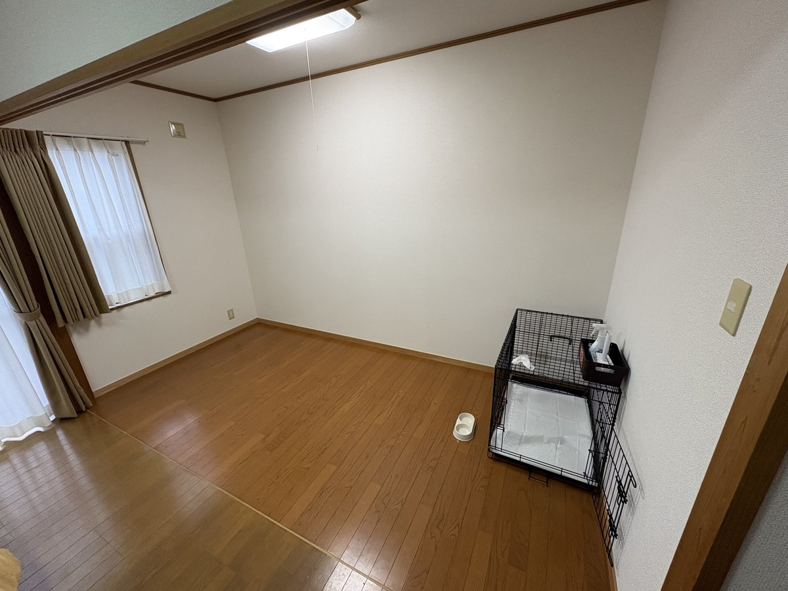
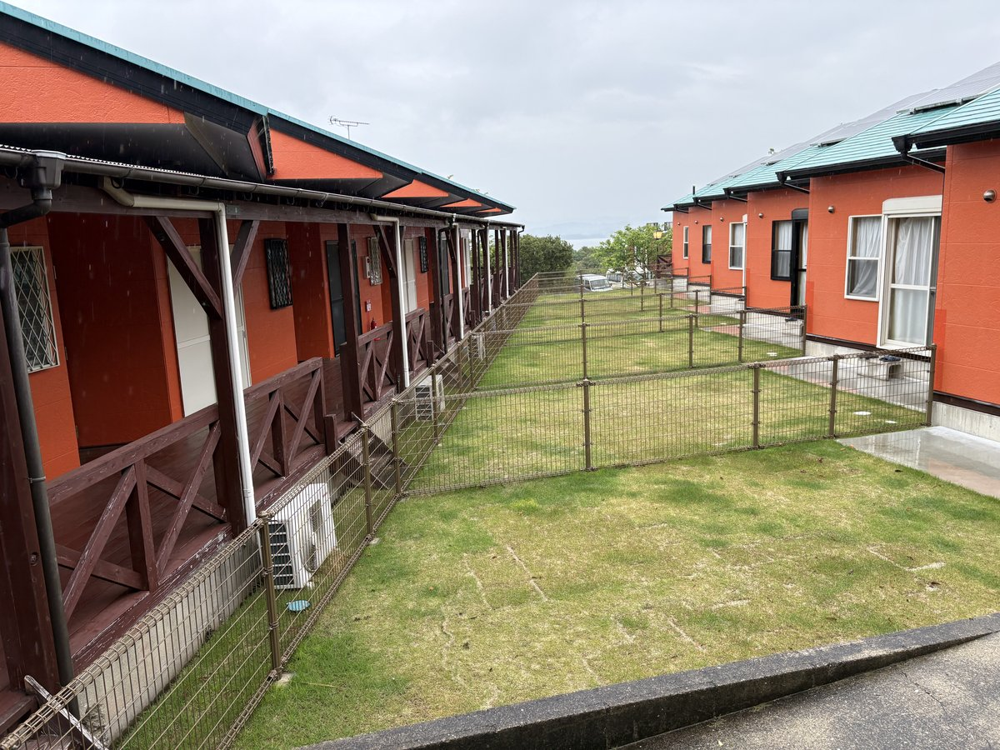
雨の合間にぽっかりと空いた一瞬、こつぶが庭の芝生で短いお散歩タイム。ずっと車の中だったので、伸び伸びと走り回って嬉しそうだった。
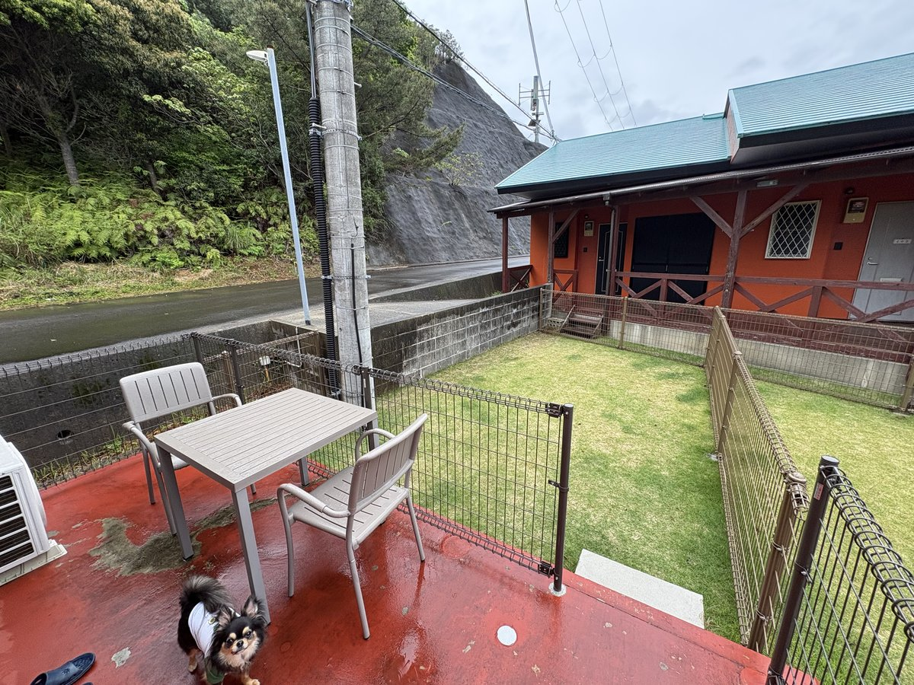
夕飯は素泊まりプランなので、昼に寄ったとれとれ市場で調達しておいたもの。コテージでゆっくり食べて、ひと息ついた頃には外は本格的に雨。
Wi-Fiがないのが少し残念だったけど、それ以外はとても快適で、価格を考えると犬連れ宿として大満足だった。
四季の郷遊楽のポイント
- 管理棟でチェックイン後、コテージ棟へ移動
- 愛犬同伴専用プランあり（リーズナブル）
- コテージ庭付き
- 室内広め、清潔
- Wi-Fiなし（要事前確認）
- 温泉付き（潮騒スパへ移動）
潮騒スパで温泉
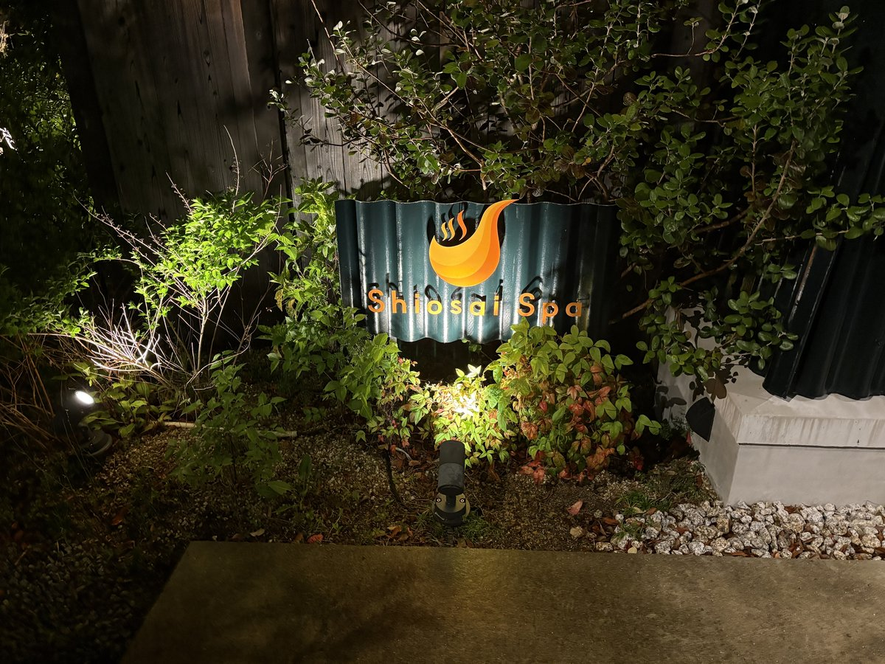
晩ご飯を食べた後、四季の郷遊楽の敷地内にあるお風呂専用の建屋潮騒スパへ移動。コテージから歩いて行ける距離で、夜道の散歩がてら向かった。
施設は新しめでとても綺麗。脱衣所も内装がおしゃれで、黄色いポップな壁画と青い波模様が印象的。外観も夜のライトアップが綺麗で、看板の「Shiosai Spa」の文字とロウソクのようなオレンジの灯りが旅情を誘う。
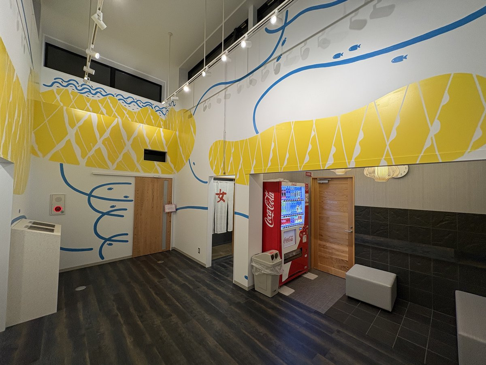
こつぶは部屋でお留守番。1泊2日の温泉旅行、雨で心がしんなりしていたところに、温泉のお湯で芯から温まれて、改めて宿選びは正解だったなと実感した。
2日目（雨上がり〜晴れ間）
江津良海岸（白浜町）— ブログを見てくれたあなただけにこっそり
ここは正直、あまり広く知られたくない運営者のお気に入りの穴場。サイトのスポット一覧には載せていないけれど、ブログを読んでくれたあなただけにこっそり共有します。
朝起きると、雨はなんとか上がっていた。快晴とまではいかないけれど、明るい曇り空。チェックアウトを済ませて、向かったのは江津良（えづら）海水浴場。
白良浜の派手さの裏側で、地元ファミリーや磯遊び好きがひっそり通う、静かで透明度の高い海岸。シーズンオフは無料の駐車場（3台分くらい）が使えて、海水浴シーズン外なら遊歩道や砂浜を犬連れで散歩しやすい。海水浴期間中は有料の駐車場（約50台）が開くようなので、料金の扱いも変わる。
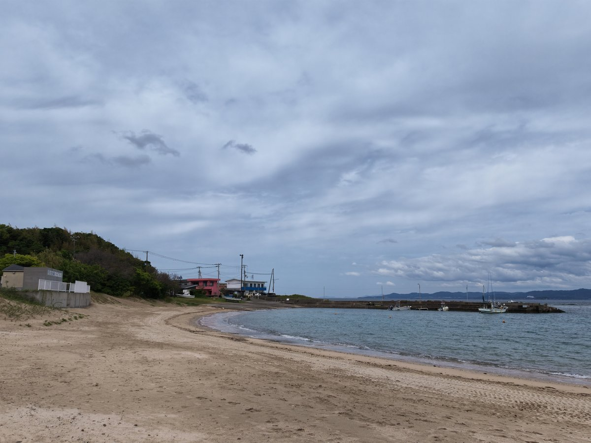
到着した時は他に誰もいなくて、こつぶと貸切状態。波の音と砂を踏む足音だけが聞こえる、とても穏やかな朝の散歩だった。海の青さと白い砂浜、雨上がりの空気の透明感がたまらなかった。
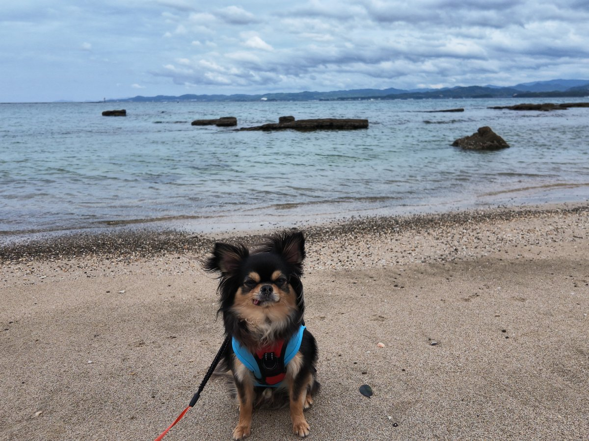
訪問する皆さんへのお願い
- 駐車場は3台分しかありません。満車時は別の場所へ
- ペットの排泄物は必ず持ち帰る
- 静かな地域なので騒音配慮を
- 海水浴の開設期間は7月中旬から8月末。この時期の犬同伴の可否は公表されている情報が見当たらないので、夏に行くなら事前に確認を
フィッシャーマンズワーフ白浜でランチ
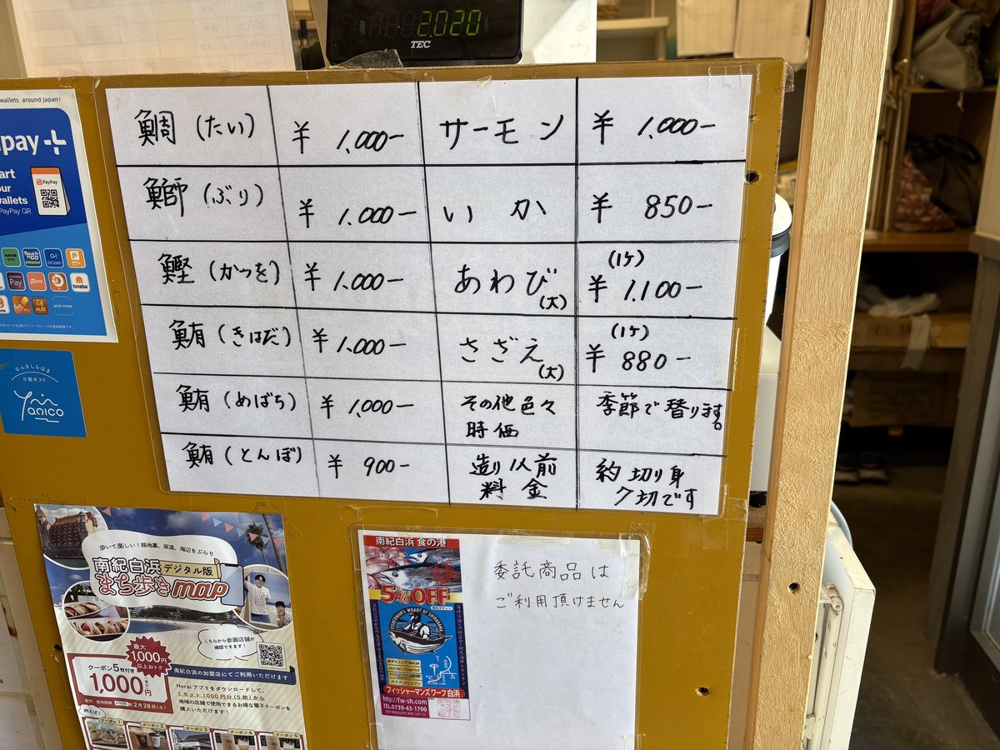
海岸散歩のあとは、お昼ご飯を食べにフィッシャーマンズワーフ白浜へ。ここでもまた海鮮丼。和歌山旅、海鮮三昧。
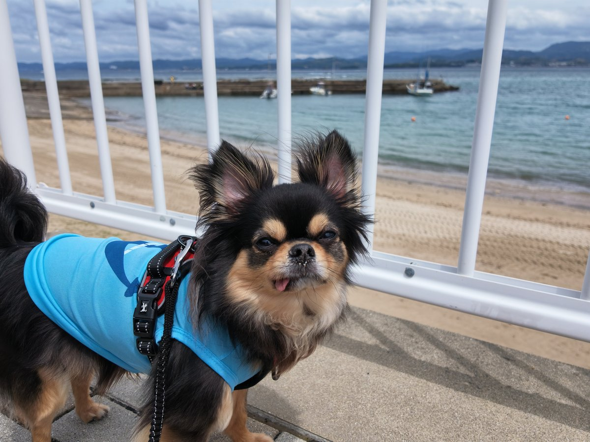
刺身ネタの値段が手書きで貼り出されていて、漁港感満載。マグロ・サーモン・カツオが各1,000円、いか850円、あわび1,100円など、新鮮なネタを好きに選べる。
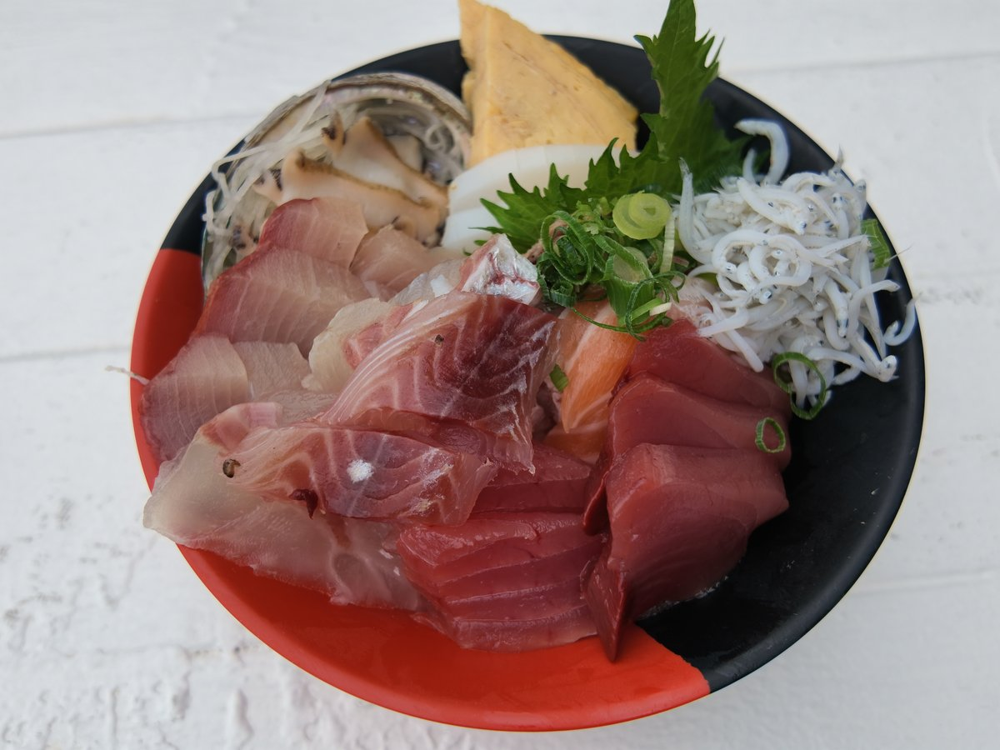
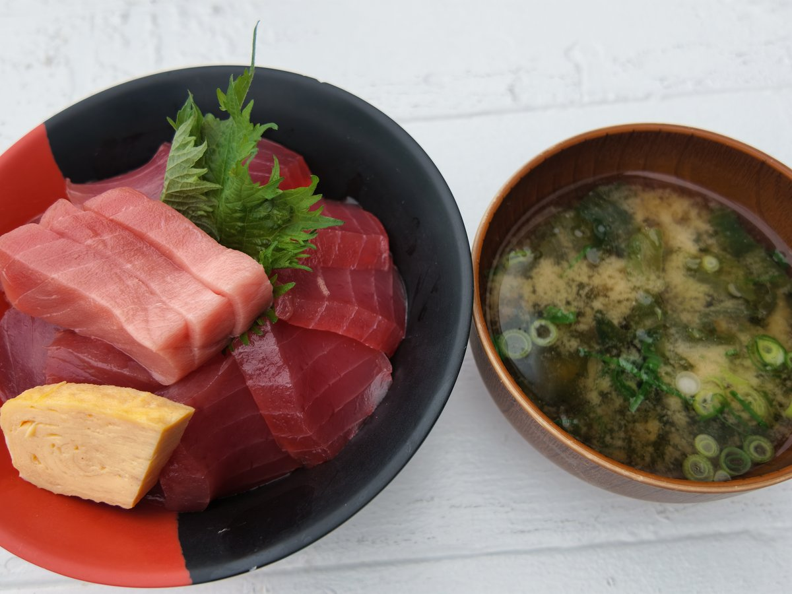
テラス席は犬OKで、店員さんがフレンドリーにこつぶに話しかけてくれた。「かわいい〜」と言ってもらえて、こつぶも嬉しそう。和歌山の犬連れ歓迎の空気にほっこり。
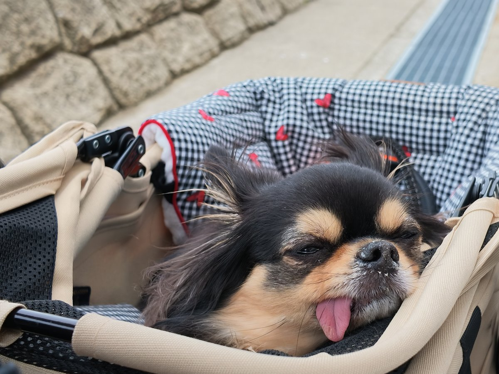
駐車場は1時間無料（飲食利用で実質的にカバーできる）。立ち寄りやすくて、白浜観光の合間にぴったりのランチスポットだった。

フィッシャーマンズワーフ白浜のポイント
- テラス席は犬同伴OK（店員さんも犬好き）
- 駐車場1時間無料
- 海鮮丼・刺身が豊富、価格表が手書きで漁港らしい
- 港のすぐ脇で雰囲気抜群
平草原公園のドッグラン

ランチ後、最後に立ち寄ったのは平草原公園。白浜町を一望する高台にある公園で、2025年6月にできたばかりの無料ドッグランが併設されている。
駐車場は60台無料で、トイレも綺麗に整備されている。園内の掲示によると、園路でのお散歩はできる。ただし芝生・休憩所・トイレ・遊具周辺など園路から外れたエリアへの立入りと、2kmのトリムコースへのペット連れでの立入りは遠慮するよう書かれている。リードは必ず着用。
ドッグランは約800㎡で、小型犬（10kg未満）と中・大型犬（10kg以上）のエリアがきちんと分離されていて、安心して遊ばせられる。足洗い場やうんちボックス、水道、東屋やシェイドも完備で、設備は充実。
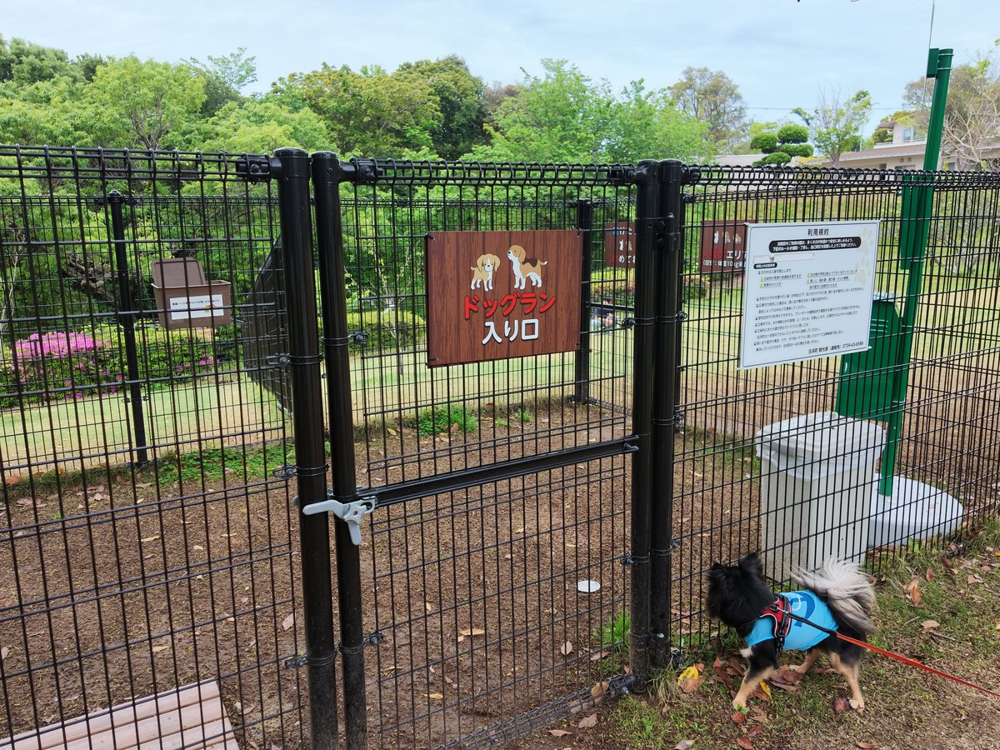
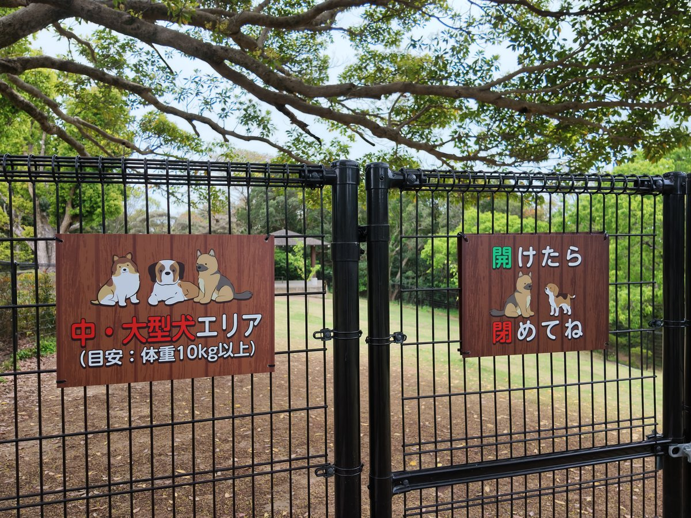
到着した時は何組かのワンちゃんがいて、こつぶも他の犬と挨拶しながら走り回っていた。久しぶりのドッグランデビューが気持ち良さそうだった。
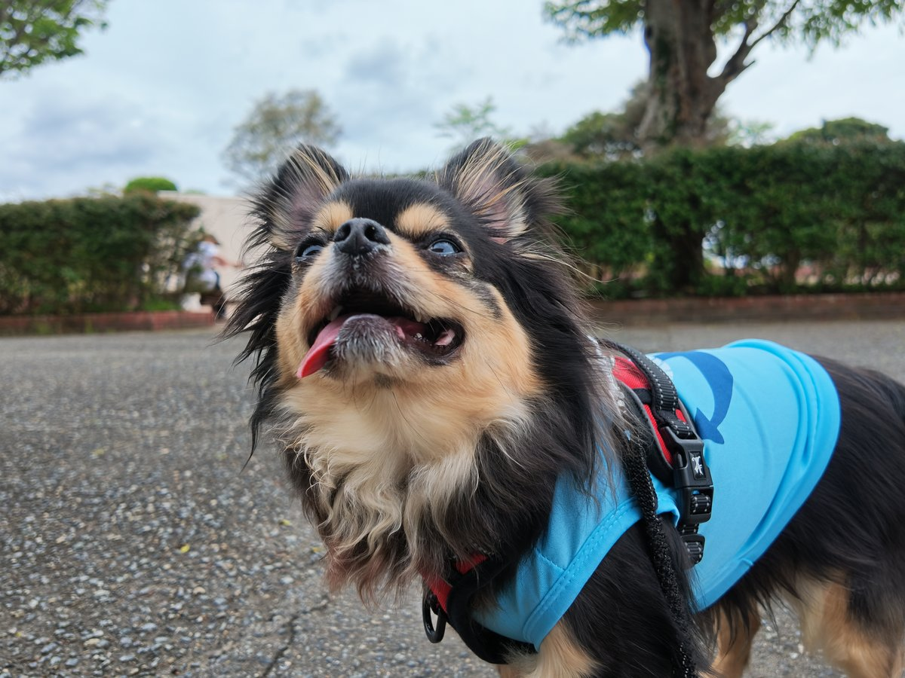
梅の実の落下に要注意
ドッグランの敷地内に梅の木があり、青い実が地面に大量に落ちていた。
梅の実、特に未熟な青い実は犬にとって有毒で、青酸配糖体を含むため誤食すると中毒を起こす危険がある。こつぶは拾い食いしないタイプだったので大事には至らなかったけれど、拾い食い癖のあるワンちゃんは要注意。
訪問するときは：
- 地面に落ちている実をチェック
- 梅の木の周辺は近づかない
- リードを短く保って拾い食い防止
- 万が一食べてしまったら即動物病院へ
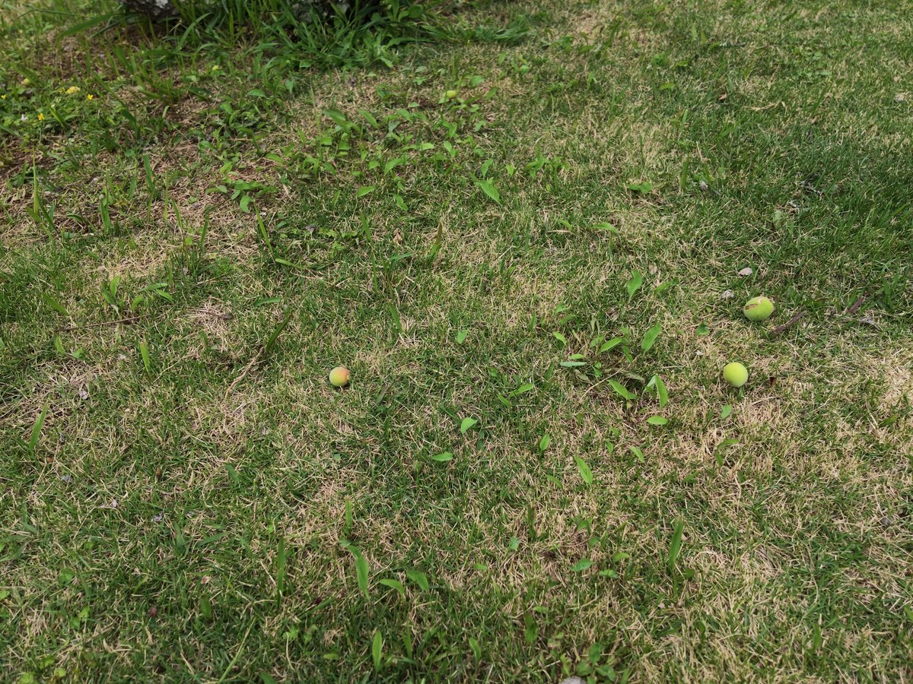
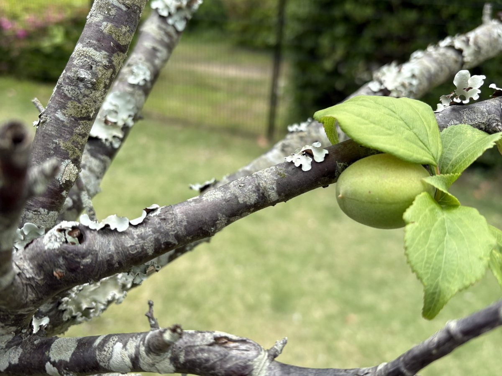
平草原公園のポイント
- 2025年6月オープンの無料ドッグラン
- 駐車場60台・無料
- エリア分離（10kg未満/10kg以上）
- 足洗い場・うんちボックス完備
- 梅の実の落下に注意（青梅は犬に有毒）
- 園路の散歩はOK。芝生・休憩所・遊具周辺とトリムコースは不可
まとめ
1日目は本降りの雨で予定通りには行かず、お弁当を芝生で広げる夢は車内に変わり、牧場のドッグランもぬかるみで見送り。それでも牛さんを近くで見られたり、温泉でリフレッシュできたり、雨でも雨なりの楽しみ方ができた。
2日目は雨が上がって、誰もいない江津良海岸でこつぶと貸切散歩、テラスで海鮮丼を食べてフィッシャーマンズワーフの店員さんに癒され、平草原のドッグランで他のワンちゃんと交流。
天気に左右されつつも、海南→白浜のルートは犬連れにとても優しい1泊2日コースだった。リピートしたい。